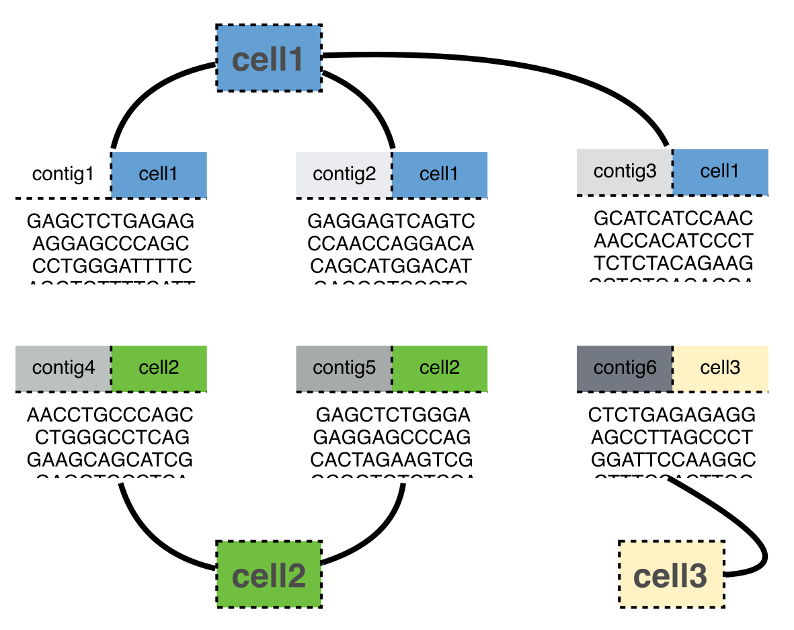
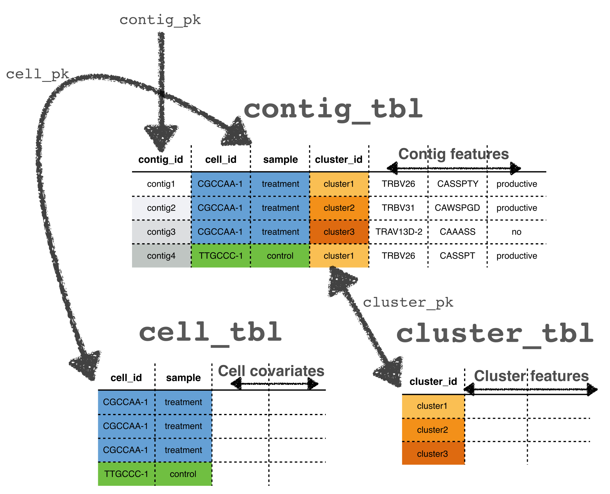

This package contains methods for clustering, pairing and testing single cell RepSeq data, especially as generated by 10X genomics VDJ solution.
Upon acceptance in Bioconductor, install with
install.packages('BiocManager') # if you don't have it yet
BiocManager::install('CellaRepertorium')For the development version, install via devtools::install_github('amcdavid/CellaRepertorium').
The fundamental unit this package operates on is the contig, which is a section of contiguously stitched reads from a single cell. Each contig belongs to one (and only one) cell, however, cells generate multiple contigs.

Contigs can also belong to a cluster. Because of these two many-to-one mappings, these data can be thought as a series of ragged arrays. The links between them mean they are relational data. A ContigCellDB() object wraps each of these objects as a sequence of three data.frames (dplyr::tibble(), actually). ContigCellDB() also tracks columns (the primary keys) that uniquely identify each row in each of these tables. The contig_tbl is the tibble containing contigs, the cell_tbl contains the cells, and the cluster_tbl contains the clusters.
The contig_pk, cell_pk and cluster_pk specify the columns that identify a contig, cell and cluster, respectively. These will serve as foreign keys that link the three tables together. The tables are kept in sync so that subsetting the contigs will subset the cells, and clusters, and vice-versa.

Of course, each of these tables can contain many other columns that will serve as covariates for various analyses, such as the CDR3 sequence, or the identity of the V, D and J regions. Various derived quantities that describe cells and clusters can also be calculated, and added to these tables, such as the medoid of a cluster – a contig that minimizes the average distance to all other clusters.
Mainly, this package seeks to enforce proper schema of single cell repertoire data and stay out the user’s way for various summaries they might conduct.
However, there are a variety of specialized functions, as well:
cdhit_ccdb(): An R interface to CDhit, which was originally ported by Thomas Lin Pedersen.fine_clustering(): clustering CDR3 by edit distances (possibly using empirical amino acid substitution matrices)canonicalize_cell(): Return a single contig for each cell, e.g., for combining VDJ information with 5’-based single cell expressionccdb_join(): join a ccdb object from this package to a SingleCellExperiment object, by droplet barcode.cluster_permute_test(): permutation tests of cluster statisticscluster_logistic_test(): logistic regression tests for overrepresentation of clusters among cellspairing_tables(): Generate pairings of contigs within each cell in a way that they can be plotted